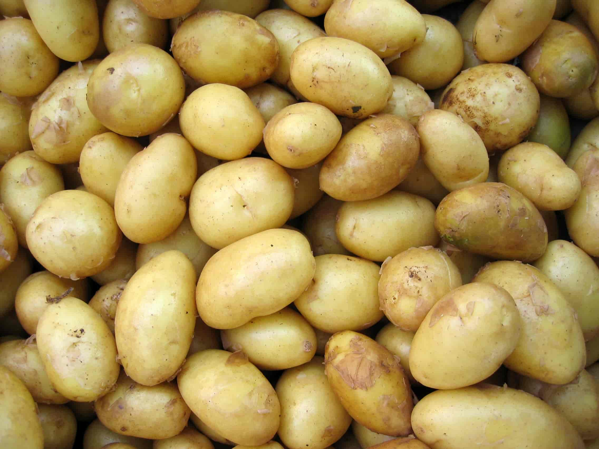
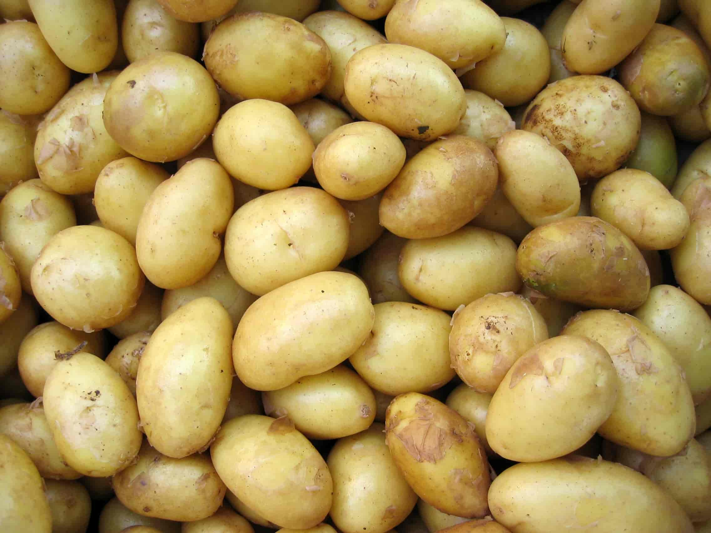

about us
The plant disease detection app
karaAgro is an Android app that utilises the power of Artificial Intelligence and Data Analytics for easy and early detection of plant disease
Ensure quality plant health
karaAgro allows automated detection of plant diseases, therefore empowering farmers to ensure Quality Plant Health.
Read More → 

Features
healthy veggies
karaAgro allows automated detection of plant diseases, therefore empowering farmers to ensure Quality Plant Health.
healthy veggies
karaAgro allows automated detection of plant diseases, therefore empowering farmers to ensure Quality Plant Health.
healthy veggies
karaAgro allows automated detection of plant diseases, therefore empowering farmers to ensure Quality Plant Health.
The team
Our c.e.o
Darlington Ahiale Akogo is the Founder, C.E.O and Director of Artificial Intelligence at minoHealth. He's also a Board Advisor and Ambassador at AI Expo Africa, the largest business focused AI community in Africa
Our team
Our amazing team are made up of members from the Android team, AI team and web development team
contact us
about us
karaAgro is an Android app that utilises the power of Artificial Intelligence and Data Analytics for easy and early detection of plant diseases
+233 50 404 9188 | +233 55 180 0233
Address here
Email here